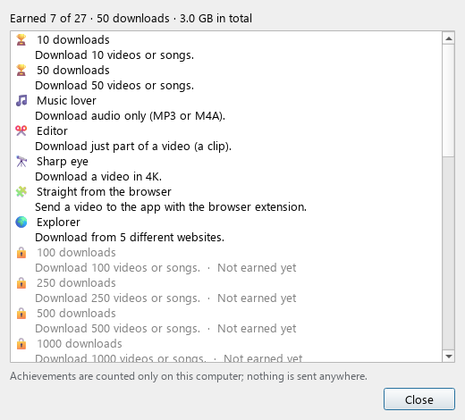
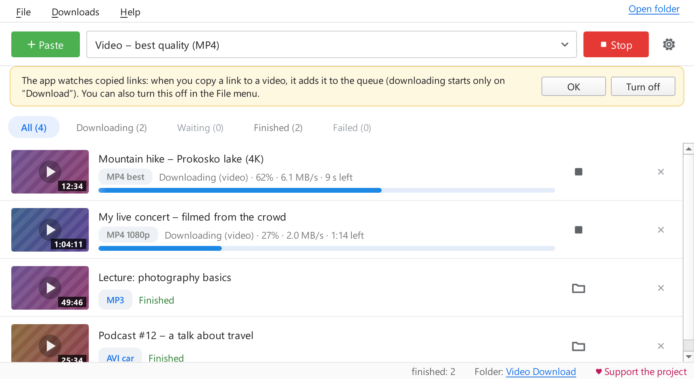
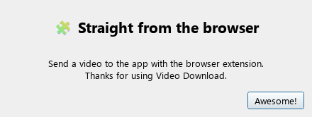

Your collection
See earned and upcoming achievements, download count and total size.

A free app for Windows, Mac, Linux and Android. Save video as MP4 or audio as MP3 from a link. On your computer, you can also send videos straight from the browser extension.
The app is meant for your own videos, content you have the author's permission for, and content under a free license. By downloading you accept the Terms of use. DRM-protected content is not downloaded.
Try it: click + Paste.
A simple window, with everything you expect from a good downloader underneath.
Best, 1080p, 720p or 480p. Picture and sound are merged into an MP4 (H.264/AAC when the site offers it) that plays on most devices.

For lectures, podcasts and music. A finished MP4 turns into an MP3 with one button.
The app notices a copied link and adds it to the queue.
Whole playlists, up to 4 downloads at the same time, automatic retry when the connection drops.
Just a part of a video, subtitles in the MP4 and the thumbnail as the file's cover.
Or same as your system. Progress on the taskbar and a notification at the end.
Windows 10 and 11, macOS (Apple chip), Linux and Android, plus the browser extension for Chrome, Edge and Firefox. Mac, Linux and Android are in beta.
The app checks for new versions itself, updates the part that reads websites without reinstalling. On Windows, Mac and Linux it installs only updates digitally signed by us.
Celebrate download milestones and the ways you use the app. Your progress stays on your device.
See earned and upcoming achievements, download count and total size.

A short congratulations appears after an achievement. It never locks a feature.

Screenshots use example progress.
Play a video, click the icon, done. Or right-click any link or video. The app starts by itself if it isn't running.
Install once, then just copy links.
No administrator needed, adds nothing else to your computer.
Copy a link, click “Paste”, or use the extension.
MP4 or MP3, then “Download”. The file waits in the Video Download folder.
The app isn't signed with a paid certificate yet, so your system asks once. Updates from inside the app don't.
Windows may show “Windows protected your PC”. Make sure the file comes from this site, then click More info and Run anyway.
Or get the Windows 11 version from Microsoft Store. Microsoft signs the package and delivers its updates.
Beta New: Video Download for Mac. For Macs with an Apple chip (M1 or newer) and macOS 13 or later. It works, but only a few people have tried it so far: please report anything that doesn't work.
The Mac version isn't signed by Apple yet, so the first start takes a few extra clicks:
Beta New: Video Download for Android. For phones with Android 10 or later. Share a video from any app and pick the quality. It works, but only a few people have tried it so far: please report anything that doesn't work.
The app isn't in Google Play, so the first install takes a few extra taps:
Use Obtainium? It installs the app straight from GitHub and keeps it up to date. Add to Obtainium →
Beta New: Video Download for Linux. For 64-bit PCs (x86_64) with Ubuntu 22.04 or newer, Linux Mint 21+, Debian 12+, Fedora 38+ or similar. It works, but only a few people have tried it so far: please report anything that doesn't work.
One file, nothing to install:
chmod +x VideoDownload-linux-x86_64.AppImage.sudo apt install fuse3) or start it with --appimage-extract-and-run.The same list as in the app (Help → What's new).
No ads, no tracking and no “premium” version. If it's useful to you, you can support its development voluntarily. A contribution unlocks nothing: the app is the same for everyone.
If something doesn't work: in the app use Help → Save a problem report, then report the problem. Reports are public: don't include passwords or personal data.
Questions in your language? Ask the community on Discord.
Websites change often. Help → Update the site reader (yt-dlp), then try again. If it still fails, the app offers the nightly yt-dlp with the newest fixes.
A live stream has no end, so the download would never finish. Download it after it ends and the recording is published.
Only what's needed: the link you download goes to that website, and update checks go to GitHub and PyPI. SponsorBlock is asked only if you turn it on, and then only with 4 characters of an encoded video ID. No accounts, statistics or tracking.
Download websites run everything on their server: your link and IP address go to them and to ad networks, and they pay for it with pop-ups, fake buttons and often a lower quality. Video Download works on your own computer or phone, without ads or accounts, in full quality, and your links go to no one but the site you download from.
The code is public on GitHub, every installer has a SHA-256 checksum, and the app installs only updates digitally signed by us, on Windows, Mac, Linux and Android.